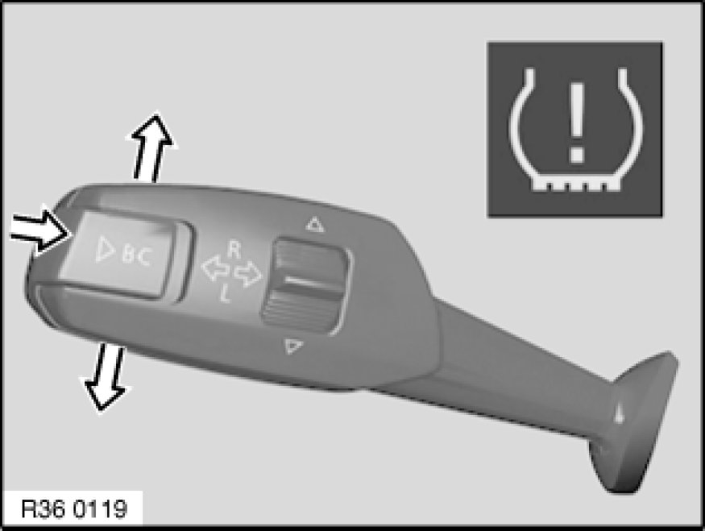

36 11 000 Initializing Run Flat Indicator (RPA)
36 11 000 - Initializing Run Flat Indicator (RPA)

Note:
Checking the tyre pressure is based on monitoring the speeds of the wheels in relation to each other. A tyre puncture is detected and signalled by way of a deviation in specific speed ratios.
The four tyres mounted on the vehicle are monitored while the vehicle is moving.
Initialization must be carried out in each case immediately after tyre pressures have been corrected, after tyres/wheels have been replaced and after repairs to the air spring system.
Important!
The Run Flat Indicator does not function when the vehicle is driven with the compact spare wheel.

Version with iDrive:
- Press controller to call up i menu
- Select Settings and press controller
- Select Car/Tyres and press controller
- If necessary, switch to the top field. Turn controller until Tyres: RPA is selected and press controller
- Start engine but do not drive off
- Select Confirm tyre pressure and press controller
- Drive off. Initialization is completed during the journey

Version without iDrive:
- Start engine but do not drive off
- Touch direction indicator lever up or down until the corresponding symbol and RESET appear
- Press PC button to confirm selection of Run Flat Indicator
- Press PC button for approx. 5 seconds until a check/tick appears after RESET
- Drive off. Initialization is completed during the journey